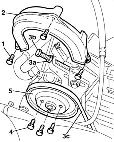

1092C14 power steering pump/self levelling suspension pump pulley - r + r with belt removed
- Path
- Procedures > 10 ENGINE UNIT > 1092 VARIOUS ENGINE COMPONENT CONTROLS > 1092C power steering/self-levelling suspension pump drive > 1092C14 power steering pump/self levelling suspension pump pulley - r + r with belt removed
- Kind
- repair procedure (removal / refitting; the operation number is the code)
- Applies to
- engines: 1.6 16v; all production periods
- Interactive page
- https://sloeber94.github.io/elrnDB-fMltpl/en/#/2891347
Applies to: engines: 1.6 16v; all production periods
 Removing
Removing
 Refitting
RefittingOpen the bonnet lid.
Loosen the bolts securing the power steering pump pulley.
1. Undo the bolts.
2. Remove the power steering pump belt guard.
3. Unscrew nut (4a) and adjustment screw (4b) to slacken belt tension. Then remove belt (3c) from the power steering pump pulley.
4. Unscrew the bolts securing the pulley to the pump.
5. Remove the power steering pump pulley.

Applies to: engines: 1.6 16v; all production periods
Refitting
RemovingFit the power steering pump pulley.
Tighten the pulley bolts to torque.
 | Fastening | Component | Ø | Value (daNm) |
|---|---|---|---|---|
- | Bolt | POWER STEERING PUMP DRIVE PULLEY | M6 | 0.9 |
Check belt condition.
Change the belt if necessary.
Fit the belt over the pulleys.
1092C12 power steering pump drive belt - adjust tension
Tighten the pulley bolts.
Topics linked from this page (1)
Topics that link to this page (6)
- 4130B20 power steering pump r r
- 4130B21 power steering pump r r with interfering parts removed
- 4130B24 power steering pump r r for versions with air conditioner
- 4130B32 power steering pump mount - r r
- 4130B34 supply pipe from fluid resevior to power steering pump r r
- 4130B35 supply pipe from fluid resevior to power steering pump r r for right hand drive versions